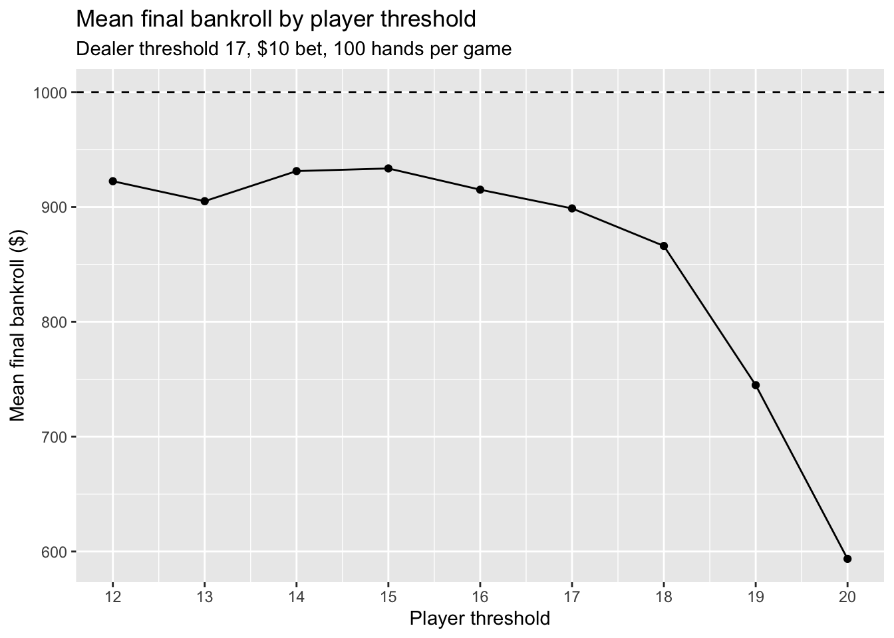

Code
library(tidyverse)
library(openintro)
library(dplyr)
library(purrr)DS002 Project 3
Jamie Paik
This simulation aims to replicate a simple game of Blackjack and see whether playing safer (with a lower player threshold) or more risky (with a higher player threshold), generates the most money after 100 rounds of play. Blackjack is a gambling game where the player plays against the dealer to get the sum of the cards to reach closest, but not over, 21. Each number card, except Ace, is worth the number on the card itself. Face cards are worth 10. An Ace is worth 1 or 11, depending on what is most ideal in a given hand.
Since the actual game of Blackjack is much more complicated (including the element of choice to hit or stay, doubling down, splitting, how much you bet… etc), we are going to simplify the rules of the game for the purposes of the simulation:
The ultimate question we would like to answer with this simulation is: After 1000 rounds of playing our simple version of Blackjack, which specific player threshold (between 12-20) avoids a loss and results in the most money?
In order to make the simulation, we would first have to create functions that perform the following actions:
We will make the first two functions first, which will later be used in more complicated functions.
We will now create a function that plays one full hand and returns win, lose, or push (tie) from the perspective of the player. Steps that the function will follow:
The player goes first. A player’s hand will be assigned, starting with an empty hand. Depending on what the player threshold is (variable between 12-20), the player’s hand will be drawn using the deal() function until the hand_sum() function calculates the hand to be more than or equal to the chosen player threshold for that game.
If player’s hand is over 21, return lose. (Do not even need to deal dealer’s hand)
If player’s hand is NOT over 21, the dealer’s hand will be assigned. Since the dealer has a fixed threshold of 17, the dealer’s hand will be drawn using the deal() function until the hand_sum() function calculates the hand to be more than or equal to 17.
If dealer’s hand is over 21, return win.
Otherwise, compare two hand totals. The possible return cases are:
#Function that plays one hand and returns result
play_round <- function(player_threshold, dealer_threshold = 17) {
if (player_threshold < 12 | player_threshold > 20) {
stop("The player threshold must be between 12-20")
}
player_hand <- c() # deal player hand
while (hand_sum(player_hand) < player_threshold) {
player_hand <- c(player_hand,deal())
}
# check if player bust
if (hand_sum(player_hand) > 21) {
return("lose")
}
dealer_hand <- c() # deal dealer hand
while (hand_sum(dealer_hand) < dealer_threshold) {
dealer_hand <- c(dealer_hand,deal())
}
# check if dealer bust
if (hand_sum(dealer_hand) > 21) {
return("win")
}
# check final results
case_when(
hand_sum(player_hand) > hand_sum(dealer_hand) ~ "win",
hand_sum(player_hand) < hand_sum(dealer_hand) ~ "lose",
hand_sum(player_hand) == hand_sum(dealer_hand) ~ "tie")
}With the function to play one Blackjack round now made above, we should now write a function that plays N hands with a bankroll and returns the final money earned/ lost. The player can keep betting at a negative balance, meaning they can end with a loss of money food.
The player starts with $1000 in the bankroll. If they win we + $bet to the bankroll, if they lose we -$ bet to the bankroll, and if they push (tie) the bankroll does not change.
The play_full_game() function will take in the inputs: bankroll (default $1000), bet (default $10), number of rounds (default 100 times), player threshold (a single number between 12-20), and dealer threshold (default 17). It will run the play_round() function 1000 times at a FIXED player threshold and calculate the final bankroll at the end.
#Function that plays 100 games at a FIXED player threshold
set.seed(47)
play_full_game <- function(player_threshold, dealer_threshold = 17, bankroll = 1000, bet = 10, rounds = 100) {
#play 1000 rounds with FIXED player threshold
for (i in seq_len(rounds)) {
result <- play_round(player_threshold, dealer_threshold)
#determine what the round result was, and +, -, or don't change bankroll
change <- case_when(
result == "win" ~ bet,
result == "lose" ~ -bet,
result == "tie" ~ 0
)
bankroll <- bankroll + change
}
return(bankroll)
}Now, since playing Blackjack 100 times and calculating the final bankrolll only give us one final bankroll number, to get a less noisy sample, we can repeat this full 100 play 100 more times.
Then, using map_dbl(), we will make the replicate_game() cycle through different player thresholds (i.e. trying player thresholds between 12-20), and see how much money each player threshold choice results in. Since our ultimate question is to understand what type of player (safer or more riskier player) earns more in the long run, mapping the replicate_game() function through each player threshold will allow us to compare across player type.
# Replicate the 100 games another 100 times
set.seed(47)
replicate_game <- function(player_threshold, num_reps = 100){
finals <- replicate(num_reps, play_full_game(player_threshold))
tibble(
threshold = player_threshold,
mean_final = mean(finals)
)
}
# Mapping the play_full_game() function over the different player thresholds
final_results <- map(.x = c(12:20), .f = replicate_game) |>
list_rbind()Now, we can take the dataframe of final_results and plot it on a boxplot to see the distribution of final bankrolls across different player thresholds.
# Line plot of final_results
final_results|>
ggplot(aes(x = threshold, y = mean_final)) +
geom_point() +
geom_line() +
scale_x_continuous(breaks = 12:20) +
geom_hline(yintercept = 1000, linetype = "dashed") +
labs(
x = "Player threshold",
y = "Mean final bankroll ($)",
title = "Mean final bankroll by player threshold",
subtitle = "Dealer threshold 17, $10 bet, 100 hands per game"
)
We stated earlier that a player strategy with a lower player threshold (~ below 17) is a safer player and a player strategy with a higher player threshold (~ above 17) is a more riskier player.
The dotted line at $1000 is the starting bankroll for players. It is seen that regardless of player threshold, all players lose after playing a lot of rounds of Blackjack, which makes sense becuase of the house edge, which is the idea that the dealer has a slightly better chance of winning if a player uses a basic strategy (which is what our model does). This house edge would show more clearly when there is a much higher number of rounds.
It can be seen from the lineplot that up to around a player threshold of 16, the meal final bankroll ranges between 900-950, with minimal variation, but the final bankroll drops significantly after a player threshold of 17. This is probably because the riskier player is more likely to bust (go over 21) and simply lose the game, whereas the safer players will at least have a chance at beating the dealer by not busting in the first place.
Although this is not exactly the same as a game of real Blackjack (especially given that the Ace is treated as 1, not both 1 and 11) and the player strategy is basic, it can still be seen that safer or moderately safer players will make more than riskier players in the long run.
---
title: "Blackjack Simulation Study"
subtitle: "DS002 Project 3"
author: "Jamie Paik"
format:
html:
code-fold: true
code-tools: true
source: true
code-overflow: wrap
execute:
warning: false
message: false
---
## Blackjack simulation background
This simulation aims to replicate a simple game of Blackjack and see whether playing safer (with a lower player threshold) or more risky (with a higher player threshold), generates the most money after 100 rounds of play. Blackjack is a gambling game where the player plays against the dealer to get the sum of the cards to reach closest, but not over, 21. Each number card, except Ace, is worth the number on the card itself. Face cards are worth 10. An Ace is worth 1 or 11, depending on what is most ideal in a given hand.
Since the actual game of Blackjack is much more complicated (including the element of choice to hit or stay, doubling down, splitting, how much you bet... etc), we are going to simplify the rules of the game for the purposes of the simulation:
* In a real Blackjack game, the dealer does not shuffle the deck after each play. For simplicity, the dealer for our simulation will draw *with replacement* from an infinite deck of cards, so that we do not have to consider changing number of cards.
* While usually the Ace in the deck changes value depending on what is useful in the given hand, this simulation will always cound Ace as 1. The other number and face cards will have the normal Blackjack values.
* The player will be using the simplest player strategy of “hit until your total reaches minimum X or more, then stand.” ()
* What will vary is the value of "X" for the player (= player threshold). The value of "X" will be variable between 12-20. Playing until 12 would be a much safer player strategy and playing until 20 would be a much more risky player strategy.
* Since the dealer deals as well, they will also have a value by which they will stop hitting (= dealer threshold). For simplicity, the dealer threshold will be fixed at 17 (i.e. dealer always stops hitting as soon as they get 17 or more)
* There could be three results after a single game of Blackjack.
* The player could win either if neither the dealer or the player busts and the player's hand is greater than the dealer's, or if the dealer busts (i.e. hand sums to greater than 21).
* Vice versa, the dealer could win either if the dealer's hand is greater than the player's, or if the player busts.
* The player and dealer could tie if they get exactly the same hand.
* Usually players choose how much to bet on each game. For simplicity, each game will have a fixed bet of $10 per game.
* For each game, you win +$10, lose -$10, or push (tie) and get $0 back.
* Every player will start with $1000 bankroll
* The player's bankroll after a hand is the old bankroll plus or minus the bet.
**The ultimate question we would like to answer with this simulation is:** After 1000 rounds of playing our simple version of Blackjack, which specific player threshold (between 12-20) avoids a loss and results in the most money?
```{r}
library(tidyverse)
library(openintro)
library(dplyr)
library(purrr)
```
### Setting the scene
In order to make the simulation, we would first have to create functions that perform the following actions:
* A function that deals one card with replacement (values 2-9, face cards as 10, ace as 1) from an infinite deck with the correct proportion of cards like a normal 52 card poker deck.
* A function that computes a hand total, regardless of who's hand it is.
* A function that plays one full hand and returns win, lose, or push.
* Write a function that plays N hands with a bankroll and returns the final money.
* Map this function 100 times and vary the player threshold at a time. (For further studies, other variables can be varied such as dealer threshold, bet amount, starting bankroll... etc)
We will make the first two functions first, which will later be used in more complicated functions.
```{r}
#Building a deck that has the right ratio of cards
deck <- c(1,2,3,4,5,6,7,8,9,10,10,10,10)
#Function that deals one card
deal <- function() {
sample(deck, size = 1, replace = TRUE)
}
#Function that computes hand total
hand_sum <- function(hand) {
sum(hand)
}
```
We will now create a function that plays one full hand and returns win, lose, or push (tie) from the perspective of the player. Steps that the function will follow:
1. The player goes first. A player's hand will be assigned, starting with an empty hand. Depending on what the player threshold is (variable between 12-20), the player's hand will be drawn using the deal() function until the hand_sum() function calculates the hand to be more than or equal to the chosen player threshold for that game.
2. If player's hand is over 21, return lose. (Do not even need to deal dealer's hand)
3. If player's hand is NOT over 21, the dealer's hand will be assigned. Since the dealer has a fixed threshold of 17, the dealer's hand will be drawn using the deal() function until the hand_sum() function calculates the hand to be more than or equal to 17.
4. If dealer's hand is over 21, return win.
5. Otherwise, compare two hand totals. The possible return cases are:
* If player's hand > dealer's hand, return win.
* If dealer's hand > player's hand, return lose.
* If player's hand = dealer's hand, return tie
```{r}
#Function that plays one hand and returns result
play_round <- function(player_threshold, dealer_threshold = 17) {
if (player_threshold < 12 | player_threshold > 20) {
stop("The player threshold must be between 12-20")
}
player_hand <- c() # deal player hand
while (hand_sum(player_hand) < player_threshold) {
player_hand <- c(player_hand,deal())
}
# check if player bust
if (hand_sum(player_hand) > 21) {
return("lose")
}
dealer_hand <- c() # deal dealer hand
while (hand_sum(dealer_hand) < dealer_threshold) {
dealer_hand <- c(dealer_hand,deal())
}
# check if dealer bust
if (hand_sum(dealer_hand) > 21) {
return("win")
}
# check final results
case_when(
hand_sum(player_hand) > hand_sum(dealer_hand) ~ "win",
hand_sum(player_hand) < hand_sum(dealer_hand) ~ "lose",
hand_sum(player_hand) == hand_sum(dealer_hand) ~ "tie")
}
```
### Calculating the bet & bankroll
With the function to play one Blackjack round now made above, we should now write a function that plays N hands with a bankroll and returns the final money earned/ lost. The player can keep betting at a negative balance, meaning they can end with a loss of money food.
1. The player starts with \$1000 in the bankroll. If they win we + \$bet to the bankroll, if they lose we -\$ bet to the bankroll, and if they push (tie) the bankroll does not change.
2. The play_full_game() function will take in the inputs: bankroll (default $1000), bet (default $10), number of rounds (default 100 times), player threshold (a single number between 12-20), and dealer threshold (default 17). It will run the play_round() function 1000 times at a FIXED player threshold and calculate the final bankroll at the end.
```{r}
#Function that plays 100 games at a FIXED player threshold
set.seed(47)
play_full_game <- function(player_threshold, dealer_threshold = 17, bankroll = 1000, bet = 10, rounds = 100) {
#play 1000 rounds with FIXED player threshold
for (i in seq_len(rounds)) {
result <- play_round(player_threshold, dealer_threshold)
#determine what the round result was, and +, -, or don't change bankroll
change <- case_when(
result == "win" ~ bet,
result == "lose" ~ -bet,
result == "tie" ~ 0
)
bankroll <- bankroll + change
}
return(bankroll)
}
```
### Mapping to see which player strategy is better
Now, since playing Blackjack 100 times and calculating the final bankrolll only give us one final bankroll number, to get a less noisy sample, we can repeat this full 100 play 100 more times.
Then, using map_dbl(), we will make the replicate_game() cycle through different player thresholds (i.e. trying player thresholds between 12-20), and see how much money each player threshold choice results in. Since our ultimate question is to understand what type of player (safer or more riskier player) earns more in the long run, mapping the replicate_game() function through each player threshold will allow us to compare across player type.
```{r}
# Replicate the 100 games another 100 times
set.seed(47)
replicate_game <- function(player_threshold, num_reps = 100){
finals <- replicate(num_reps, play_full_game(player_threshold))
tibble(
threshold = player_threshold,
mean_final = mean(finals)
)
}
# Mapping the play_full_game() function over the different player thresholds
final_results <- map(.x = c(12:20), .f = replicate_game) |>
list_rbind()
```
### Visualizing the simulation
Now, we can take the dataframe of final_results and plot it on a boxplot to see the distribution of final bankrolls across different player thresholds.
```{r}
# Line plot of final_results
final_results|>
ggplot(aes(x = threshold, y = mean_final)) +
geom_point() +
geom_line() +
scale_x_continuous(breaks = 12:20) +
geom_hline(yintercept = 1000, linetype = "dashed") +
labs(
x = "Player threshold",
y = "Mean final bankroll ($)",
title = "Mean final bankroll by player threshold",
subtitle = "Dealer threshold 17, $10 bet, 100 hands per game"
)
```
We stated earlier that a player strategy with a lower player threshold (~ below 17) is a safer player and a player strategy with a higher player threshold (~ above 17) is a more riskier player.
The dotted line at $1000 is the starting bankroll for players. It is seen that regardless of player threshold, all players lose after playing a lot of rounds of Blackjack, which makes sense becuase of the house edge, which is the idea that the dealer has a slightly better chance of winning if a player uses a basic strategy (which is what our model does). This house edge would show more clearly when there is a much higher number of rounds.
It can be seen from the lineplot that up to around a player threshold of 16, the meal final bankroll ranges between 900-950, with minimal variation, but the final bankroll drops significantly after a player threshold of 17. This is probably because the riskier player is more likely to bust (go over 21) and simply lose the game, whereas the safer players will at least have a chance at beating the dealer by not busting in the first place.
Although this is not exactly the same as a game of real Blackjack (especially given that the Ace is treated as 1, not both 1 and 11) and the player strategy is basic, it can still be seen that safer or moderately safer players will make more than riskier players in the long run.